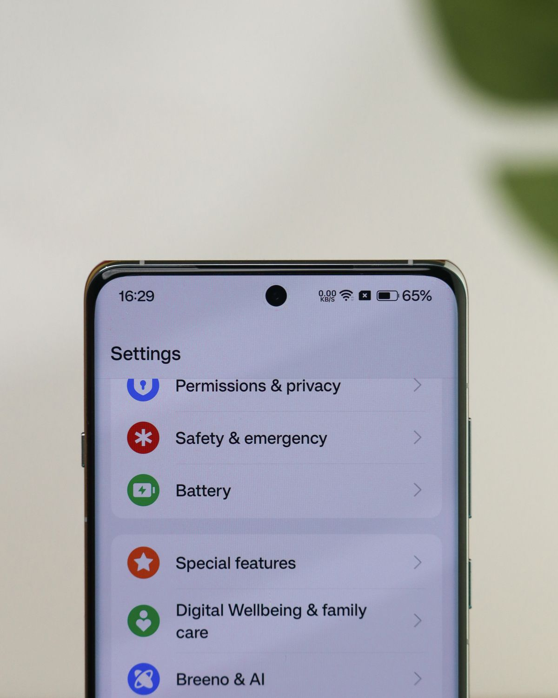
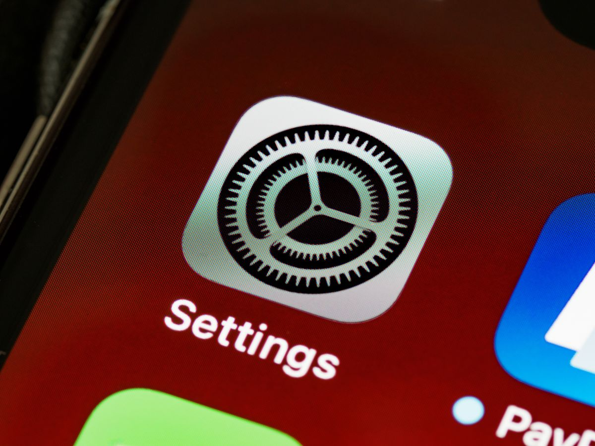
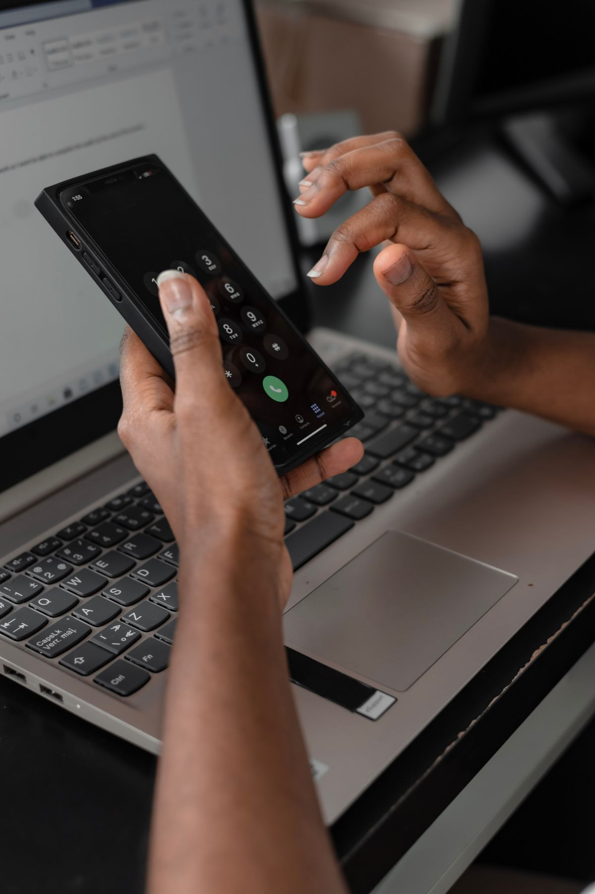

Buka Pengaturan, nyalakan hotspot, lalu pilih nama hotspot itu dari daftar WiFi di laptop atau HP lain dan masukkan kata sandinya. Di Android jalurnya ada di Hotspot dan tethering, di iPhone di Hotspot Pribadi dengan tombol Izinkan Orang Lain Bergabung. Prosesnya cuma beberapa ketukan dan tidak butuh aplikasi tambahan.
Hotspot mengubah HP kamu menjadi pemancar WiFi mini. HP membagikan paket data selulernya supaya laptop, tablet, atau HP lain bisa ikut online. Kamu hanya butuh paket data aktif dari operator yang mengizinkan berbagi koneksi. Sebagian operator membatasi atau mengenakan biaya tambahan untuk tethering, jadi cek dulu ketentuan paketmu kalau ragu.
Hotspot memakai data seluler, bukan WiFi yang sedang tersambung ke HP kamu, jadi kuota yang terpakai adalah kuota paket datamu. Hotspot juga menguras baterai lebih cepat, jadi colokkan charger selama berbagi koneksi dan matikan hotspot begitu selesai. Langkah di artikel ini mengikuti menu Android dan iOS yang berlaku per November 2026, dan nama menu bisa sedikit berbeda di tiap merek HP.
Bagaimana cara mengaktifkan hotspot di HP Android?
Di HP Android, cara tercepat adalah lewat panel cepat. Geser layar dari atas ke bawah, lalu ketuk ikon Hotspot. Kalau ikonnya tidak ada, tambahkan dulu lewat tombol Edit di panel cepat.
Untuk pengaturan lengkap, buka Pengaturan, ketuk Jaringan dan internet, lalu Hotspot dan tethering, lalu Hotspot WiFi, dan nyalakan saklarnya. Di HP Samsung, jalurnya sedikit berbeda: Pengaturan, Koneksi, lalu Hotspot Seluler dan Tethering. Merek lain memakai nama menu yang mirip, jadi kalau bingung, ketik kata hotspot di kolom pencarian yang ada di bagian atas aplikasi Pengaturan.
Sebelum menyalakan hotspot untuk pertama kali, atur dulu nama dan kata sandinya, dan jangan biarkan keamanan di posisi Tanpa Kata Sandi, karena siapa pun di dekatmu bisa ikut memakai kuotamu. Satu hotspot WiFi Android bisa dipakai sampai 10 perangkat sekaligus. Aktifkan juga pengaturan mati otomatis bila HP kamu menyediakannya, supaya hotspot tidak terus menyala setelah tidak ada perangkat yang tersambung.

Bagaimana cara mengaktifkan hotspot di iPhone?
Buka Pengaturan, lalu ketuk Hotspot Pribadi. Nyalakan Izinkan Orang Lain Bergabung, dan hotspot kamu langsung aktif. Kalau menu Hotspot Pribadi tidak muncul di layar Pengaturan, ketuk Seluler dulu, pastikan Data Seluler menyala, lalu ketuk Hotspot Pribadi atau Siapkan Hotspot Pribadi.
Nama hotspot iPhone sama dengan nama perangkat kamu. Untuk menggantinya, buka Pengaturan, Umum, lalu Mengenai, dan ketuk Nama. Kata sandi bisa diubah di halaman Hotspot Pribadi, di kolom Kata Sandi WiFi, dan panjangnya minimal delapan karakter.
Personal Hotspot hanya membagikan data seluler. iPhone tidak bisa tersambung ke WiFi lalu meneruskan WiFi itu ke perangkat lain. Kalau menu hotspot tidak muncul, hubungi operator untuk memastikan paketmu mendukung layanan ini.

Bagaimana cara menyambungkan laptop atau HP lain ke hotspot?
Di perangkat yang mau tersambung, buka daftar WiFi, pilih nama hotspot HP kamu, masukkan kata sandinya, lalu ketuk Sambungkan. Begitu tersambung, perangkat itu memakai kuota HP kamu.
Selain WiFi, Android juga bisa berbagi lewat kabel USB dan Bluetooth. Untuk USB, colokkan kabel ke laptop lalu nyalakan Penambatan USB di HP. Catatan: Mac tidak bisa memakai penambatan USB dari HP Android. Bluetooth juga bisa dipakai untuk berbagi koneksi ke perangkat lain.
Pengguna Apple punya jalan pintas bernama Instant Hotspot. Kalau iPhone dan Mac atau iPad kamu masuk dengan Akun Apple yang sama dan WiFi serta Bluetooth menyala, nama iPhone muncul di daftar WiFi perangkat lain itu dan kamu bisa tersambung tanpa mengetik kata sandi.
Sesudah laptop tersambung ke hotspot, kamu juga bisa memindahkan berkas antara HP dan laptop tanpa kabel supaya tidak perlu colok kabel lagi.
Kenapa hotspot boros kuota dan baterai?
Hotspot memaksa HP bekerja dua arah: menarik data dari jaringan seluler dan memancarkannya lagi sebagai WiFi. Itu sebabnya baterai cepat habis dan HP terasa hangat. Google menyarankan untuk mencolokkan charger selama tethering dan mematikan koneksi berbagi begitu selesai dipakai.
Kuota juga cepat habis karena perangkat yang tersambung tidak tahu kalau ia memakai paket data HP. Laptop yang tersambung bisa mengunduh pembaruan sistem dan menyinkronkan foto ke cloud tanpa bertanya dulu. Sebelum menyalakan hotspot, matikan pembaruan otomatis dan sinkronisasi di laptop, dan minta orang yang tersambung untuk tidak memutar video.

Apa yang harus dilakukan kalau hotspot tidak muncul atau tidak bisa tersambung?
Kalau menu hotspot tidak ada, penyebab paling umum adalah paket operator yang tidak mendukung berbagi koneksi. Cek dulu apakah data seluler menyala dan paketmu masih aktif. Di iPhone, pastikan Data Seluler menyala lalu cari menu Siapkan Hotspot Pribadi di Pengaturan lalu Seluler. Kalau tetap tidak ada, hubungi operator untuk memastikan layanan hotspot memang termasuk di paketmu, karena sebagian operator mengenakan biaya tambahan untuk layanan ini.
Kalau hotspot sudah menyala tapi laptop tidak bisa tersambung, periksa tiga hal: kata sandi yang diketik, nama hotspot yang dipilih, dan jarak kedua perangkat yang sebaiknya tidak lebih dari 10 meter. Kalau masih gagal, matikan lalu nyalakan lagi hotspotnya, lalu mulai ulang HP dan perangkat yang mau tersambung.
Hotspot adalah jalan keluar paling cepat saat WiFi tidak ada dan laptop butuh internet. Atur nama dan kata sandinya sekali, ingat cara menyalakannya, dan kamu bisa berbagi koneksi kapan pun tanpa aplikasi tambahan. Matikan hotspot begitu selesai, supaya kuota dan baterai tidak habis sia-sia.
Kalau kamu sering berbagi koneksi, baca juga cara melihat password WiFi yang sudah tersambung di HP dan cara menghemat kuota internet HP Android tanpa aplikasi, supaya kuotamu tidak cepat habis.
Sumber dan Info Resmi
Angka dan tanggal di artikel ini merujuk ke sumber berikut:
- Android Help: langkah menyalakan hotspot, satu hotspot WiFi sampai 10 perangkat, tethering WiFi, Bluetooth, dan USB, Mac tidak bisa memakai penambatan USB dari HP Android, operator bisa membatasi atau mengenakan biaya, tips hemat baterai saat tethering.
- Apple Support: Hotspot Pribadi, tombol Izinkan Orang Lain Bergabung, kata sandi minimal 8 karakter, jumlah perangkat yang bisa bergabung tergantung operator dan model iPhone, operator harus mendukung layanan ini.
- Panduan iPhone: Personal Hotspot hanya membagikan data seluler dan tidak meneruskan WiFi, jarak perangkat sebaiknya dalam 30 kaki atau 10 meter, nama hotspot sama dengan nama perangkat, Instant Hotspot untuk perangkat Apple yang masuk dengan Akun Apple yang sama.
- Esatu.id: jalur hotspot di HP Samsung, Pengaturan, Koneksi, lalu Hotspot Seluler dan Tethering.